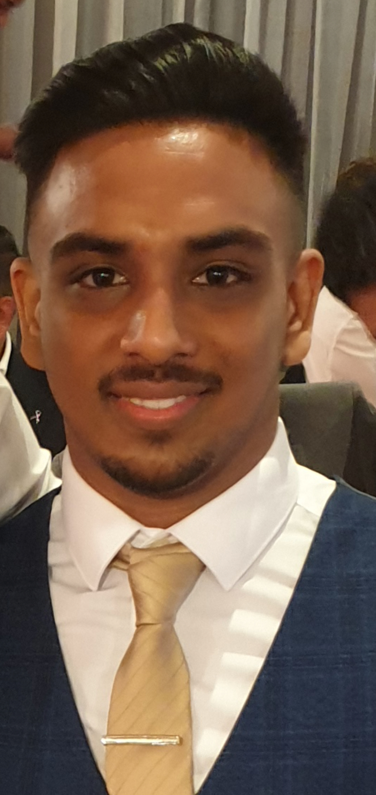

About Me

In the summer of 2019, I graduate from the University of Birmingham with a Bsc in Chemsitry. I decided that I wanted to pursue a career in technology rather than in a chemistry field. Therefore, I had not done any formal study with computer science or any programming languages up to this point. In anticipation for a role in technology, I started using Udemy to undertake courses to develop skills that will be helpful in my career. I have learned how to utilise excel to an advanced level and have also started to learn python. After gaining adept experience in python, I am looking to familiarise myself with SQL databases.
My passion for technology and the desire to start a career in the industry lead me to applying for the AWS re/Start programme. I was selected to be involved and not only was the focus on technical concepts (such as Linux, Python, Networking, Security, AWS) but there was also a focus on soft skills as well (communication, teamwork, time management, patience). As part of the programme, I am undertaking the AWS Certified Cloud Practitioner exam.
During the course, I was encouraged to try write scripts in bash and python as we learned them. Some of which can be found on my GitHub page. Even this website has been created due to the education I received during AWS re/Start and the desire to further myself constantly. Technology is constantly evolving and so I strive to continuously educate myself on new and developing technologies.
Throughout my life I have always been interested in technology and, more specifically, gaming technology. This interest led me to find a passion for PC technology and new innovations such as virtual reality. Recently, I have learned to build PCs from scratch from building up knowledge of all components used and their functions. Building PCs for others has become a hobby and driven me to keep up to date with the latest developments and research for all PC components. There is a requirement to be able to tailor each PC for the customer considering, both, their use and budget.
Since I was 18, I have been helping my dad out at the family business (DIY shop). Due to my dads’ lack of technological knowledge, he gave me the responsibility to diagnose, troubleshoot and resolve a range of technical issues. This gave me experience in researching and problem-solving issues on my own and the confidence needed to tackle new problems in the future.
I pride myself as a very self-motivated and a hardworking individual, who once is given a task, will strive to complete it without any hesitation. Working as part of a team is very enjoyable to me. I have a lot of experience working in teams which have allowed me to develop excellent communication skills and a great level of empathy that helps me work with people from all different types of backgrounds. Building strong relationships with those around me is key to a achieving the long-term goals of the team.
I am motivated to take the next step to further my personal development/career and to join a company that I can be of value to, to face new challenges and to help contribute to their targets for the foreseeable future.